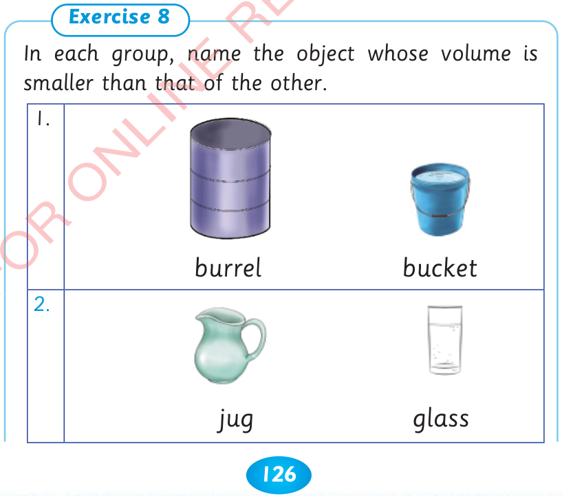
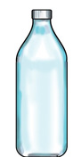
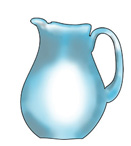
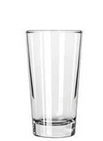
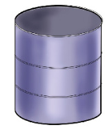
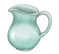

126



Recognizing non-standard tools for measuring volume. The pictures show a bottle, a jug and a glass. Recognizing units for measuring volume. Some of the units used to measure volume are millilitres and litres.

volume




bottle
jug
glass
Recognizing units for measuring volume
Some of the units used to measure volume are millilitres and litres.
Exercise 8. In each group, name the object whose volume is smaller than that of the other. 1. A barrel and a bucket are shown. 2. A jug and a glass are shown.
In each group, name the object whose volume is smaller than that of the other.
1.

burrel
bucket
2.

jug
glass


ARITHMETICS PUPIL'S STD 2.indd 126
06/11/2024 17:23